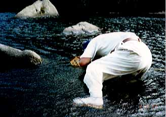

A secret trick for eel fishing in Japan
I reckon you have seen and used many kind of fishing hooks. From a tiny hook like #20 for midge flies to a huge heavy hook to catch enormouse marlin from a fishing boat. However, you can not imagine there is a fishing "hook" that has no bend at all. It has just a strait shape.
I would like to introduce the "strait hook" and a secret trick for eel fishing that my father told me. This technique is a traditional way of eel fishing among the mountain villages of Japan. But nowadays, it has been forgotten, I guess.
- Hook
In Japan, there are two types of eel fishing in mountain rivers of Japan that use fishing rod. The first method uses the ordinary curved hook. The second uses a just straight needle made from a 2 to 3-mm diameter steel rod or music wire. Or you can use a thick sawing needle. The key point of this "strait hook" is that both ends are sharply pointed.
- Bait
Eel fishing at moutain rivers and streams in Japan, the best bait is "Doba-mimizu", Lumbricus terrestris. (Link to Wikipedia)
In Japanese, "Doba" means "huge", and "mimizu" is about worms. These huge worms have really strong smell, and it attracts the eels that hiding deep inside of holes.

Because the "doba-mimizu" is easily found at the tea plantation fields.

They are hiding under the fallen leaves of the tea-plantation fields, and easy to pick up. When you collect enough "Doba-mimizu", put them into a wet cotton bag to keep them alive and fresh.
Ideally, tiny "Ayu-fish", about 10 to 15cm in length are the best. But Ayu is difficult to catch/prepare on demand.

- Rod
Rod is a simple bamboo stick in length of 1.6 to 2 meters (5 to 7 ft). Put a 40cm of whalebone/baleen to the tip of the rod.
The whalebone makes the tip flexible so the eel does not hesitate to swallow the bait.
- Fishing line
In this method, the eel anglers use about 2mm thickness of strong kite string as fishing line. I am not sure about its strength, but it might has 10lb of strength or more.
- Rig
Tie the line in the middle of the straight needle firmly. Then put or bury the needle and the tip of the fishing line carefully into the middle of a doba-mimizu's body. Then put the whalebone/baleen of the rod tip into the end of the doba-mimizu's body.
- Searching eel's hiding place
Eel are hiding in "holes". But the hole would not tipical hole-like space. They might be a small clack of a rock, a tiny space between boulders and cobbles. They like the place where the water current hits against the spots. I guess the current brings fresh oxygen rich water to the holes.

- Bite and making strike
Eel anglers must seek these holes/spots carefully and patiently. If you found a likely spot, you should put the bait at the entrance of the spot, not too deep inside. If some bait came into their hiding places, they would be scared and you would ruin the chance of catching eel.
When you supporting the bait, the smell of it gradually flow into the spot. If an eel were inside of the spot, it will came to the entrance and bite the bait.
However, do not rush to make a strike. You MUST count 10 before making a strike. If your strike was too quick, the bait and the "needle hook" would come out from the eel's mouth. Please count 1 to 10, patiently.
After counting 10, you should pull the line firmly. Then one point of the needle would stub at the inside of the eel's throat, joe, or gorge. When one point sticks in the throat, the middle part of the needle is pulled and the other point also stubs or sticks onto the eel's inside skin. Finally, the needle and the line make a T-shaped form. So the needle will not come off from the throat or gorge of the hooked eel.
- Fighting
When a hole resident eel hooked, they resist and fight with enormous power and tension. Because they can make a holding point of their body by rapping their tail around the rocks/cobbles at the deep end of their home.
Angler must be patient again. Just holding the fishing line firmly. You might see the eel's blood come out from the hole.
When you pull out the eel from the hole, it will tangle onto your arm and the line. But do not worry, the needle would never came off from the eel. What you should do is just calm down and grab the eel, and put it into your creel.
Usually, took out the needle will be a hard thing. So cut off the line and leave the special hook inside of the eel's mouth or throat. You can get it when you gutting or cooking the eel.